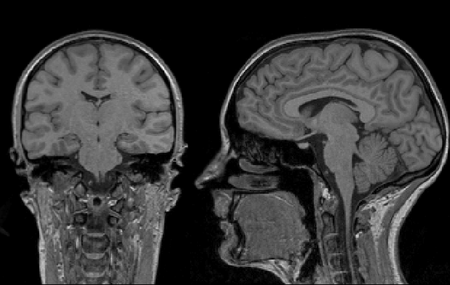

Hello World! I am working on a Bachelors in Computer Science as well as an Industrial Design Minor at the Georgia Institute of Technology.
I am currently looking for either a Software Engineering or Project Management Internship for the Summer of 2017.
I love all things that fall at the intersection of puzzles, technology and design. I also have a passion for biosciences and humanitarian work, and am especially interested in how software, design and data visualization enrich these fields.
Experience
-

UNSW 3D Visualisation Aesthetics Lab
Working under Dr. John McGhee and using virtual reality headsets and Unity Game Development software, our lab models and visualizes the biological processes of real patient data. I have been working on making a visualization of a stroke a multiplayer experience, so two Oculus headsets can view and move through the world at the same time. I have gained valuble experience with Unity Scripting, the Oculus Development Kit, and the Unity Networking System. See what we do.
-

Georgia Tech Design Club
During my Junior year, I was invovled on the leadership team for Design Club. The club was new this semester, and was an incredible hit. We designed modules, lessons and discussion topics. I taught workshop on D3.js to about 30 students. The slides can be found here!
-

Georgia Tech Design for America
A group of Georgia Tech students chartered the first DFA organization at our school in Spring 2015. The next semester, the club decided to reboot and selected a new executive board, of which I was chosen as the Marketing and Recruitment Director. Together we ran a number of design workshops, OpenIdeo Brainstorms, and networked throughout the startup and design scene of Atlanta.
-

Tivix Software Engineering Intern
I've spent two summers at Tivix, a software consulting firm that primarily uses the Django/Python framework for their platforms. Here, I completed the Django training module that all of their engineers complete, as well as some of their AngularJS training. I was involved in developing an internal tool for goal management and helped with site updates. I also had a UI/UX and PM role in designing a product database system.
-

Computational Perception Lab
Under Dr. Maithilee Kunda, I worked as an undergraduate resesarch assistant in the School of Interactive Computing's Computational Perception Lab. Our specific experiment used eye tracking technology and computer vision to observe how participants solved Kohs Block Puzzles. My individual role included using D3.js to visualize solutions strategies, administering experiemnts, and discussing the CV and AI components.
-

Wheeler Lab
The Wheeler Lab is in the Psychology department at Georgia Tech and focuses on perception, memory and aging. I volunteered here for two semesters as an undergraduate research assistant. I administered experiments and memory tests on participants, and learned how to take, analzye, and learn from MRI scans.